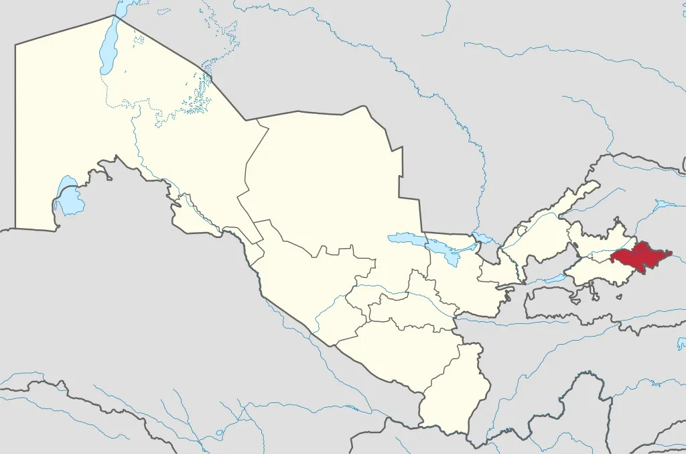

Andijon viloyati
Andijon viloyati – Oʻzbekiston Respublikasi tarkibidagi viloyat. Fargʻona vodiysining sharqiy qismida. 1941-yil 6-martda tashkil etilgan. Maydoni 4,2 ming km². Aholisi 2196,0 ming kishi (2000). Andijon viloyatida 14 qishloq tuman, 11 shahar va 95 qishloq fuqarolari yigʻini bor (2000). Markazi – Andijon shahri.
Andijon viloyati yer yuzasi asosan tekislik. Hozirgi relyefi va yer yuzasidagi jinslar toʻrtlamchi geologik davrning katta-kichik daryolari va irmoqlarining faoliyatidan hosil boʻlgan. Viloyatning gʻarbiy qismi qirli tekislik (bal. 400–500 m), sharqi (Andijon shahridan sharda) Fargʻona va Olay tizmalarining tarmoqlaridan iborat. Andijon viloyati geologik aktiv zonada joylashgan, kuchli zilzilalar bulib turadi (qarang Andijon zilzilasi). Ixdimi keskin kontinental, quruq. Togʻ tkzmalari Fargʻona vodiysini sovuq xavoning kirib kelishidan toʻsib turganligi uchun qishda Andijon viloyatida ob-havo birmuncha barqaror. Yozi issiq, iyulning oʻrtacha temperaturasi 27,3°, kishi nisbatan sovuq, yanvarning oʻrtacha temperaturasi –3°. Vegetatsiya davri 217 kun. Yiliga 200 – 250 mm yogʻin tushadi. Av. Oʻzbekistonning boshqa viloyatlariga nisbatan suv resurslariga boy. Daryolari yogʻindan, togʻlarlagi koʻp yillik qor va muzliklardan suv oladi
Andijon viloyati respublika ishlab chiqarishda va madaniy taraqqiyotida yetakchi oʻrin tutgan viloyatlardan biri. Respublikaning 2,6 % neftini, 8,3 % paxtasini, 8,7 % paxta tolasini, 8,7 % oʻsimlik moyini beradi (2000; rejaga nisbatan). Tabiiy resurslar, qishloq xoʻjaligi xom ashyosi negizida ishlaydigan sanoat tarmoklari, shuningdek aholiga isteʼmol buyumlari ishlab chiqaradigan korxonalar barpo etildi. Viloyatda tadbirkorlik rivojlanib borayapti. Uni qoʻllab-quvvatlash maqsadlariga 2 mlrd. soʻmdan ziyod kredit berilib, 3,4 mln. AQSH dollari miqdorida chet el sarmoyasi jalb qilindi (2000). 1995-2000-yillar mobaynida viloyat iktisodiyotida 23,5 mlrd. soʻm chet el sarmoyasi kiritildi.